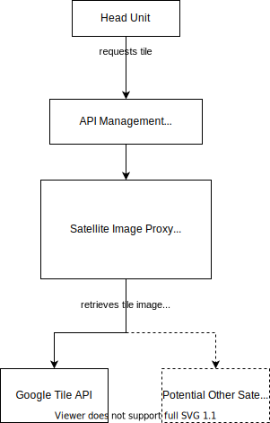
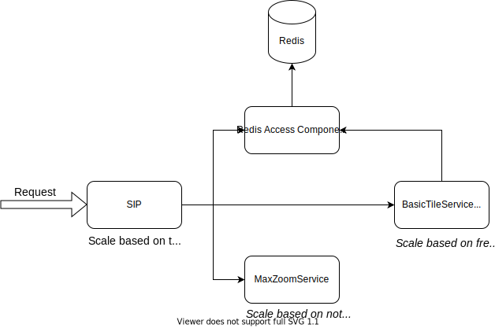
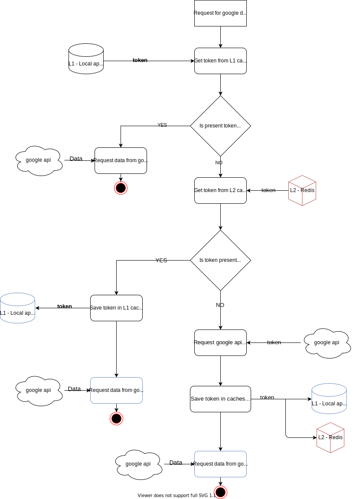
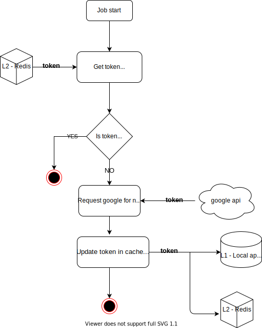
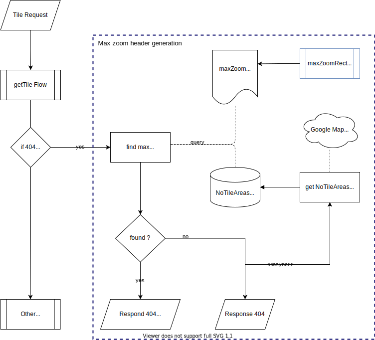
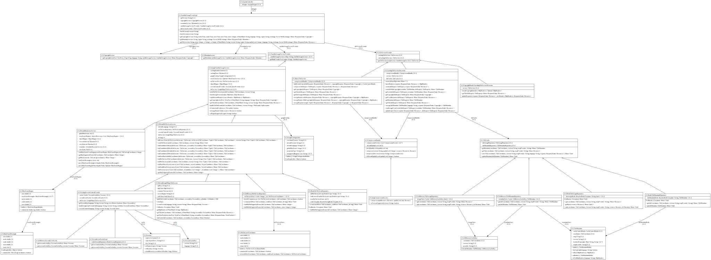
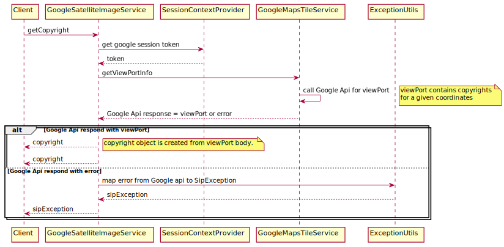
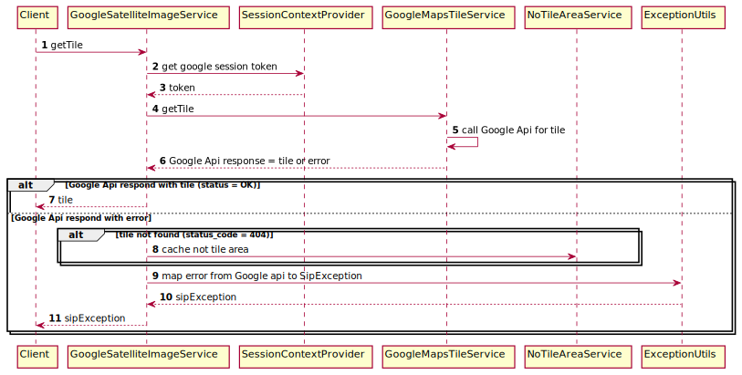
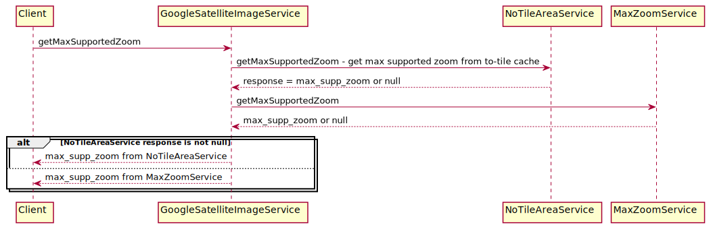

Authors and Contributors
Document history
| Version | Date | Author | Change |
|---|---|---|---|
0.1 |
17 Nov 2020 |
Document released |
|
1.0 |
25 Jan 2021 |
Adaptation to Detailed Design review guidelines |
|
1.1 |
25 Feb 2021 |
Resilience to communication failures with cosmosdb |
Review status
Review status
| Reviewer | Approved | Needs work |
|---|---|---|
✓ |
||
✓ |
||
✓ |
||
✓ |
Introduction
Name
Satellite Image Proxy
Component Type
Java web application / rest service.
Purpose and function
Provide satellite map images and copyright information about them via REST API.
Retrieve satellite images from Google (or other map provider), compress and cache them in order to:
save on bandwidth by stronger compression improve the responsiveness and save on Google API usage by caching and reusing the compressed image tiles over multiple vehicles
Requirements
SIP has to:
support different map providers based on region support caching the Google sessions support caching the tile images support compression (jpeg, astc, etc.) support mocking google tile api for unit testing bad weather scenarios
Design assumptions
-
Google API key is valid indefinitely and won’t change on regular basis
-
tile images and copyright information can be cached in service for the period returned in "Cache-Control" headers
Design decisions
This section can be found in Confluence.
Design
This document considers Satellite Image Proxy (SIP) service as software component and java classes as software unit.
Context dependencies and resources

High level software components design
Interfaces
Only interface exposed by the service is the REST API, see Satellite Image Proxy Service - API Specification
Design limitations
Currently, SIP is a single java application. As a future improvement SIP will be decomposed to smaller components, which will run independently deployed from each other and communicate over http protocol. SIP will be divided to components with respect to responsibilities of each component. This improvement is planned to improve overall service performance. Now different SIP modules have very different memory and CPU usage.

SIP decomposition to smaller components
Design overview
Component level design
This diagram shows how SIP component communicates with external services and resources.

Component level design
Conceptual design
This diagram shows conceptual division of SIP application into modules.

SIP Conceptual design
Flow design
This section presents detail flow design of most important SIP functionalities.
SIP request flow

Overall SIP requests flow diagram.
Following decisions where made during design:
-
automatic expiration of records in Redis is based on Cache-Control header of Google’s response
-
Redis size is crucial factor for cost of the solution, we should not keep records (especially images which take up much more space) longer than they are useful
-
-
asynchronous saving images and metadata to cache
-
we want to serve client with image as fast as possible, therefore we can store images and metadata in background thread
-
-
no synchronization of image fetching
-
there might be situation when there are two request for the same tile (same x, y, zoom parameters) and that tile is not available in cache (either never downloaded or expired)
-
we allow both requests to download the file on their own and race to save data in Redis
-
adding synchronization (i.e. assuring only one request at a time is downloading particular map tile) would increase complexity of the solution, add extra latency (locking, polling) and might severely impact service performance in case of thread/instance failure before unlocking the resource
-
Google session management
SIP uses google session tokens to get data from google api. Any request for tails or copyrights requires providing valid session token to get data. Session tokens from google are valid for 15 days, but SIP renew them 1 day before to be sure that application will not try to request google data with invalid token.
SIP uses 2 levels of cache to store tokens: * 1’st level - internal application instance cache - first place to lookup for valid token * 2’nd level - Redis - deployed as Azure service, shared by all application instances. Get google token for requesting data for Google.

Google session management flow
Chosen job updating tokens cl to expiration date. Sip has cron job running every day. It is checking how long google session tokens stored in 2’nd level cache will still be valid. If some token will expire in less than 24 hours, then it is re-new and updated in 1’st and 2’nd level cache.

Google sessions cache update flow
Resilience
SIP uses Resilience4j library to control requests load to external services - Redis, Google. Load to those services is driven by errors. When error is thrown during communication to these services, request sending is stopped for given time.

Resiliency in SIP service
-
Time limiter will prevent Redis requests from taking too long (>500ms) in case of communication failures.
-
Circuit breaker will prevent too many background requests choking sip in case of communication failures
-
Circuit breaker goes into OPEN state if 5 out of last 10 requests fail
-
Circuit breaker remains in OPEN state for 30 secs (no more requests to Redis are allowed)
-
After 30 secs, one request to Redis is allowed which will determine whether to switch to CLOSED or remain OPEN
-
-
If request times out or if Circuit breaker is OPEN, then SIP will serve images from google.
-
the liveness endpoint includes the state of the circuit breaker (ie, liveness=DOWN when Circuit breaker=OPEN)
-
Kubernetes will restart the node if liveness is DOWN for 90 secs
Max Zoom Header in Tile Not-Found Responses

Max Zoom Header in Tile Not-Found Responses
-
MaxZoomRects : Google viewport response includes a list of rectangles with max zoom for each. This information is less accurate (always >= 19) but can be prefetched.
-
NoTileAreas: Tiles are missing even at Google suggested max zoom levels and lower. We can know of them only when we try to get tiles in those areas. This information is very accurate but can only be built over time.
-
In case of tile-not-found for zoom beyond google-suggested-zoom, we respond with 404 + maxZoom based on MaxZoomRects.
-
In case of tile-not-found for zoom within google-suggested-zoom and tile is still missing, then
-
for first request we return just 404, and asynchronously find/save NoTileArea.
-
for subsequent requests (for even any coordinates within the same No-Tile-Area), we respond with 404 + accurate maxZoom based on NoTileAreas.
-
Detailed structural design
This document will consider java classes as software units. Below diagram present structure of main classes which application is composed of.

Structural diagram of main Sip classes
Com.tomtom.puas.sip.SatelliteImageProxyImpl - Main class which is input of application. Methods of the class handles rest endpoint requests.
Com.tomtom.puas.sip.components.cache.inmemory.InMemorySecondLevelCache - Data access class for Google session stored in in-memory cache
Com.tomtom.puas.sip.components.cache.redis.SecondLevelCacheImpl - Data access class for Google session stored in external application cache. Wrapper for session access repository.
Com.tomtom.puas.sip.components.cache.redis.RedisSessionRepository - Data access class for Google session stored in external application cache. Class access data directly from cache.
Com.tomtom.puas.sip.components.google.utils.TileCoordinatesUtils - Helper class for operation made on tile coordinates
Com.tomtom.puas.sip.components.cache.inmemory.InMemoryTileImageRepository - Data access class for tiles stored in in-memory cache
Com.tomtom.puas.sip.components.cache.inmemory.InMemoryTileMetadataRepository - Data access class for metadata stored in in-memory cache
Com.tomtom.puas.sip.components.cache.redis.RedisTileImageRepository - Data access class for tiles stored in external cache
Com.tomtom.puas.sip.components.cache.redis.RedisTileMetadataRepository - Data access class for metadata stored in external cache
Com.tomtom.puas.sip.components.google.service.impl.DefaultNoTileAreaService - Class contains logic related with no tile areas
Com.tomtom.puas.sip.components.cache.redis.RedisNoTileAreaRepository - Data access class for no tile area stored in external cache
Com.tomtom.puas.sip.monitoring.TracingIdFilter - Filter for enhance response with traceId for logging purposes
Com.tomtom.puas.sip.components.google.utils.ExceptionUtils - Exception helper class.
Com.tomtom.puas.sip.model.CacheControlDetails - Class encapsulates metadata related to cache entries.
Com.tomtom.puas.sip.model.NoTileAreaCoordinates - Model class containing coordinates on not tile area.
Com.tomtom.puas.sip.components.cache.inmemory.InMemoryNoTileAreaRepository - Data access class for no tile area stored in in-memory cache
Com.tomtom.puas.sip.components.google.service.impl.DefaultGoogleMapsTileService - Logic for getting data from google rest service.
Com.tomtom.puas.sip.exception.RestExceptionHandler - Global handler for application exceptions.
Com.tomtom.puas.sip.components.google.service.impl.DefaultMaxZoomService - Service for calculating max available zoom for a tile.
Com.tomtom.puas.sip.components.google.service.impl.CachingSessionContextProvider - Create google session context for request sending to google api.
Com.tomtom.puas.sip.components.cache.cronjobs.SessionTokenUpdateCronjob - Cronjob class executing scheduled tasks periodically.
Com.tomtom.puas.sip.components.google.service.impl.GoogleSatelliteImageService - Provides methods to retrieve satellite image tiles.
Com.tomtom.puas.sip.components.compression.impl.JpegCompressionService - responsible for compression tile images.
.1. Behavioral Design
This document will consider Satellite Image Proxy as the software component and java classes as software units.
.1.1. Unit interfaces
com.tomtom.puas.sip.SatelliteImageProxyImpl
Main class which is input of application. Methods of the class handles rest endpoint requests.
Mono<ResponseEntity<Resource>> getTile(String version, Integer zoom, Integer x, Integer y, String ifNoneMatch, String format, String region, Integer qualityLevel, String language, ServerWebExchange exchange)
Implementation for rest endpoint: GET /sip/{version}/tile/{z}/{x}/{y} Get a satellite image tile specified by zoom level, x and y coordinates. Retrieving tile is delegated to class implementing TileService interface. Method proceeds as follows:
-
Verifies version parameter against current api version. Throws VersionNotSupportedException if they don’t match.
-
Verifies requested tile image format. Throws FormatNotSupportedException if format is not supported. Currently, only supported format is jpeg.
-
Delegates tile image retrieval to TileService implementation class and returns result without changes.
SatelliteImageProxyImpl.getTile
Parameters
-
version (String) - The version of the service to call. (required)
-
z (Integer) - Zoom level of the tile to be rendered. (required)
-
x (Integer) - The x coordinate of the tile on a zoom grid. Values 0..2^(z-1). (required)
-
y (Integer) - The y coordinate of the tile on a zoom grid. Values 0..2^(z-1). (required)
-
ifNoneMatch (String) - Contains an identifier for a specific version of resource. The server will send back the requested resource, with a 200 HTTP status code, only if it doesn't have an ETag matching the given one. Otherwise, a 304 HTTP status code will be returned to indicate that content is not changed. (optional)
-
format (String) - The format of the Response. (optional, default to jpeg)
-
region (String) - A CLDR region identifier representing the physical location of the user. e.g. KR for South Korea. This parameter will be used to choose the appropriate backend content provider. If this parameter is not specified or is invalid, the default backend content provider will be used. (optional)
-
qualityLevel (Integer) - A percentage value indicating the desired quality of image. Lower the quality-level, the more compressed the image. A factor of 100 will return the original image without any compression by SIP. Compression by SIP may be limited by the quality of the original image. for example jpeg images from Google are already at 90-95% jpeg-quality and compressing it again using same or bigger quality-level will not result in any compression. (optional)
-
language (Integer) - A CLDR language identifier indicating the language information. For example, en-US or ja-JP. (optional, default to 'en-US')
-
exchange (ServerWebExchange) - injected by framework
Return (Mono<ResponseEntity<Resource>>)
Http response with tile image resource. Status code and headers are set by TileService and returned unchanged to client.
Throws
-
VersionNotSupportedException if version provided in request doesn’t match current api version.
-
FormatNotSupportedException if requested tile format is not supported. Currently, only supported format is jpeg.
[Req-SIP-10]
Mono<ResponseEntity<Copyright>> getCopyright(String version, Float north, Float south, Float east, Float west, Integer zoom, String ifNoneMatch, String language, String region, ServerWebExchange exchange)
Implementation for rest endpoint: GET /sip/{version}/copyright/ Get copyright text for the specified area. Method proceeds as follows:
-
Verifies version parameter against current api version. Throws VersionNotSupportedException if they don’t match.
-
Delegates copyright retrieval to CopyrightService result without changes.
Parameters
-
version (String) - The version of the service to call. (required).
-
north (Float) - The furthest north point in the viewport expressed in degrees. North must be in the range (-90,90). (required)
-
south (Float) - The furthest south point in the viewport expressed in degrees. South must be in the range (-90,90). (required)
-
east (Float) - The furthest east point in the viewport expressed in degrees. East must be in the range (-180,180). (required)
-
west (Float) - The furthest west point in the viewport expressed in degrees. West must be in the range (-180,180). (required)
-
zoom (Integer) - This is the current zoom level of the viewport. (required)
-
ifNoneMatch (String) - Contains an identifier for a specific version of resource. The server will send back the requested resource, with a 200 HTTP status code, only if it doesn’t have an ETag matching the given one. Otherwise, a 304 HTTP status code will be returned to indicate that content is not changed. (optional)
-
language (String) - A CLDR language identifier indicating the language information. For example, en-US or ja-JP. (optional, default to 'en-US')
-
region (String) - A CLDR region identifier representing the physical location of the user. e.g. KR for South Korea. This parameter will be used to choose the appropriate backend content provider. If this parameter is not specified or is invalid, the default backend content provider will be used. (optional)
-
exchange (ServerWebExchange) - injected by framework.
Returns (Mono<ResponseEntity<Copyright>>)
Return the copyright text for the specified area. Status code and headers are set by CopyrightService and returned unchanged to client.
Throws
VersionNotSupportedException if "version" parameter doesn’t match currently called api.
[Req-SIP-11]
Mono<ResponseEntity<Metadata>> getMetadata(String version, String region, ServerWebExchange exchange)
Implementation for rest endpoint: GET /sip/{version}/metadata Get metadata info by given map provider in the requested region. Method proceeds as follows:
-
Verifies version parameter against current api version. Throws VersionNotSupportedException if they don’t match.
-
Delegates copyright retrieval to MetadataService result without changes.
Parameters
-
version (String) The version of the service to call. (required)
-
region (String) A CLDR region identifier representing the physical location of the user. e.g. KR for South Korea. This parameter will be used to choose the appropriate backend content provider. If this parameter is not specified or is invalid, the default backend content provider will be used. (optional)
-
exchange (ServerWebExchange) - injected by framework.
Returns (Mono<ResponseEntity<Metadata>>)
Returns metadata info for the given parameters. Status code and headers are set by MetadataService and returned unchanged to client.
Throws VersionNotSupportedException if "version" parameter doesn’t match currently called api.
[Req-SIP-12]
com.tomtom.puas.sip.service.BasicTileService
Mono<ResponseEntity<Resource>> getTile(TileRequest tileRequest)
Responsible for retrieving tile image and copyright from external service (Google) and send data back to client. Uses GoogleSatelliteImageService to get tiles from google service. If GoogleSatelliteImageService returns Mono<SipException>, then this method will throw SipException as well.

BasicTileService.getTile
Parameters
-
TileRequest - object containing all information needed to make request to google for tiles: coordinates, eTag, format, qualityLevel, mapProvider, language.
Returns (Mono<ResponseEntity<Resource>>)
ResponseEntity containing tile image data as a spring Resource. ResponseEntity object is created by GoogleSatelliteImageService and return to the client in unchanged with regard to http response body, header and status.
Throws
SipException if GoogleSatelliteImageService returns Mono<SipException>.
[Req-SIP-1]
com.tomtom.puas.sip.service.CachingTileServiceDecorator
Mono<ResponseEntity<Resource>> getTile(TileRequest tileRequest)
Responsible for retrieving tile image and copyright from cache or external service (google), and then add it to cache if not present.

CachingTileServiceDecorator.getTile
Expiry time of a tile is stored in cache in tile metadata and returned to client as a http response header. Expiry time of a new tile (not in cache yet) is calculated from google api response base in fields: 1. max-age - currentTime + max-age. 2. if max-age not present, then uses Expiry field.
Parameters
-
TileRequest - object containing all information needed to make request to google for tiles: coordinates, eTag, format, qualityLevel, mapProvider, language.
Returns (Mono<ResponseEntity<Resource>>)
ResponseEntity containing tile image data as a spring Resource.
Throws
SipException if GoogleSatelliteImageService returns Mono<SipException>.
[Req-SIP-2]
com.tomtom.puas.sip.service.CopyrightHeaderEncodingTileServiceDecorator
Mono<ResponseEntity<Resource>> getTile(TileRequest tileRequest)
Responsible for retrieving tile image and copyright from cache or external service (google). If TileService returns data, then encode copyright headers before sending back to service client. Otherwise, method returns unchanged response from TileService.
CopyrightHeaderEncodingTileServiceDecorator.getTile
Parameters
-
TileRequest - object containing all information needed to make request to google for tiles: coordinates, eTag, format, qualityLevel, mapProvider, language.
Returns (Mono<ResponseEntity<Resource>>)
Copyright data.
[Req-SIP-9]
com.tomtom.puas.sip.components.compression.CompressionHandler
Resource compress(String format, Integer qualityLevel, Resource resource)CompressionHandler
Compresses image resource with given quality level and format.
CompressionHandler.compress
Parameters
-
format - image format.
-
qualityLevel - quality level of image in resource.
-
resource - image resource to compress.
Returns (Resource)
Compressed resource image. null if input resource was null;
[Req-SIP-3]
boolean isDefaultQualityLevel(Integer qualityLevel)
Checks if quality level has default value.
Parameters
-
qualityLevel: int - Quality level of compression
Returns (boolean)
'True' if 'qualityLevel' is null or is equal to default value, otherwise returns 'False'. Default quality level is set in application configuration.
[Req-SIP-4]
com.tomtom.puas.sip.components.cache.TileCache
Mono<TileMetadata> getMetadata(TileCoordinates coordinates, String format, String mapProvider)
Retrieves tile metadata from application cache by delegating 'get' operation to TileMetadataRepository instance.
Parameters
-
coordinates (TileCoordinates) - Coordinates of a tile for which metadata was stored. Is a part of cache key string.
-
format (String) - Format of a cached image. Is a part of cache key string.
-
mapProvider (String) - name of external service providing map images (e.g.: google). Is a part of cache key string.
Returns (Mono<TileMetadata>)
TileMetadata object retrieved by repository. Response is wrapped in Reactor Mono object for further stream processing. Returns empty Mono if no data was found by TileMetadataRepository.
[Req-SIP-5]
Mono<Resource> getTile(TileCoordinates coordinates, String format, String mapProvider)
Retrieves tile from application cache by delegating 'get' operation to TileImageRepository instance.
Parameters
-
coordinates (TileCoordinates) - Coordinates of a tile. Is a part of cache key string.
-
format (String) - Format of a cached image. Is a part of cache key string.
-
mapProvider (String) - name of external service providing map images (e.g.: google). Is a part of cache key string.
Returns (Mono<Resource>)
Spring Resource object with cached tile image. Response is wrapped in Reactor Mono object for further stream processing. Returns empty Mono if no data was found by TileMetadataRepository.
[Req-SIP-6]
Mono<Void> storeTile(TileCoordinates coordinates, String format, String mapProvider,String language, ResponseEntity<Resource> response)
Store tiles and metadata for a tile in cache by delegating 'store' operation to TileMetadataRepository and TileImageRepository. If storing metadata fails with exception then it will not store the tile.
Parameters
-
coordinates (TileCoordinates) - Coordinates of a tile for which metadata was stored. Is a part of cache key string.
-
format (String) - Format of a cached image. Is a part of cache key string.
-
mapProvider (String) - name of external service providing map images (e.g.: google). Is a part of cache key string.
-
language (String) - tile language.
-
response (ResponseEntity<Resource>) - object represents http response. It contains tile resource in body and copyrights in headers to be cached.
Returns (Mono<Viod>)
Empty Mono object.
Throws
RuntimeException if TileMetadataRepository or TileImageRepository throw exception when storing data.
[Req-SIP-7]
Mono<Void> updateMetadata(TileMetadata tileMetadata)
Updates existing metadata in cache by delegating 'put' operation to TileMetadataRepository instance.
Parameters
-
tileMetadata (TileMetadata) - metadata object to update in cache. by delegating to cache repositories injected to TileCache instance.
Returns (Mono<Viod>)
Empty Mono object.
[Req-SIP-8]
com.tomtom.puas.sip.components.cache.inmemory.InMemorySecondLevelCache
Class is a responsible for managing communication with in-memory application cache.
Mono<Session> put(SessionCacheKey sessionCacheKey, Session session)
Stores google session token in in-memory application cache.
Parameters
-
sessionCacheKey (SessionCacheKey) - Cache key which identifies record in cache.
-
session (Session) - Session object to store in cache. Object wraps google token string.
Returns (Mono<Session>)
Stored session object.
[Req-SIP-13]
Mono<Session> get(SessionCacheKey sessionCacheKey)
Retrieves google session token object from in-memory cache.
Parameters
-
sessionCacheKey (SessionCacheKey) - Cache key which identifies record in cache to retrieve.
Returns (Mono<Session>)
Retrieved session object wrapped in Mono. If no session was found under given key returns empty Mono.
[Req-SIP-14]
com.tomtom.puas.sip.components.cache.redis.SecondLevelCacheImpl
Mono<Session> put(SessionCacheKey sessionCacheKey, Session session)
Stores google session token in 2nd level cache. Operation is delegated to RedisSessionRepository.
Parameters
-
sessionCacheKey (SessionCacheKey) - Cache key which identifies record in cache.
-
session (Session) - Session object to store in cache. Object wraps token string.
Returns (Mono<Session>)
Session object returned by RedisSessionRepository.put.
[Req-SIP-16]
Mono<Session> get(SessionCacheKey sessionCacheKey)
Retrieves session object from 2nd level cache. Operation is delegated to RedisSessionRepository.
Parameters
-
sessionCacheKey (SessionCacheKey) - Cache key which identifies record in cache to retrieve.
Returns (Mono<Session>)
Retrieved session object wrapped in Mono. If no session was found under given key then returns empty Mono.
[Req-SIP-17]
Flux<Tuple2<String, Session>> getSessionKeys()
Retrieves all session objects stored in 2nd level application cache with their cache keys. Operation is delegated to RedisSessionRepository.
Returns (Flux<Tuple2<String, Session>>)
All session objects stored in 2nd level application cache.
[Req-SIP-18]
com.tomtom.puas.sip.components.cache.redis.RedisSessionRepository
Mono<Session> put(SessionCacheKey sessionCacheKey, Session session)
Stores or updates google session object in 2nd level cache under given key.
Parameters
-
sessionCacheKey (SessionCacheKey) - Cache key which identifies record in cache.
-
session (Session) - Session object to store in cache. Object wraps token string.
Returns (Mono<Session>)
Stored session object.
[Req-SIP-19]
Mono<Session> get(SessionCacheKey sessionCacheKey)
Retrieves session object from 2nd level cache.
Parameters
-
sessionCacheKey (SessionCacheKey) - Cache key which identifies record in cache to retrieve.
Returns (Mono<Session>)
Retrieved session object wrapped in Mono or empty Mono if no session was found under given key.
[Req-SIP-20]
Flux<Tuple2<String, Session>> getSessionKeys()
Retrieves all session objects stored in 2nd level application cache with their cache keys.
Returns (Flux<Tuple2<String, Session>>) Gets all session objects stored in 2nd level application cache with their cache keys.
[Req-SIP-21]
com.tomtom.puas.sip.components.google.utils.TileCoordinatesUtils
static Point centralPoint(TileCoordinates tileCoordinates)
Calculates geographical coordinates (latitude and longitude) for central point in tile.
Parameters
-
tileCoordinates - TileCoordinates object representing tile to transform.
Returns (Point)
Point representing coordinates of central point.
[Req-SIP-23]
public static boolean outOfRange(TileCoordinates tileCoordinates)
Checks if x or y coordinates are within range possible for given zoom.
Parameters
-
tileCoordinates - TileCoordinates object representing tile to verify.
Returns (boolean)
'true' if x, y coordinates are within the range, 'false' otherwise.
[Req-SIP-70]
static Double south(TileCoordinates tileCoordinates)
Calculates latitude for south edge of given tile.
Parameters
-
tileCoordinates (TileCoordinates) - coordinates of tile in degrees.
Returns (Double)
Latitude value of south edge of given tile.
[Req-SIP-24]
static Double north(TileCoordinates tileCoordinates)
Calculates latitude for north edge of given tile.
Parameters
-
tileCoordinates (TileCoordinates) - coordinates of tile in degrees.
Returns (Double)
Latitude value of north edge of given tile.
[Req-SIP-25]
static Double east(TileCoordinates tileCoordinates)
Calculates longitude for east edge of given tile.
Parameters
-
tileCoordinates (TileCoordinates) - coordinates of tile in degrees.
Returns (Double)
Longitude value of east edge of given tile.
[Req-SIP-26]
static Double west(TileCoordinates tileCoordinates)
Calculates longitude for west edge of given tile.
Parameters
-
tileCoordinates (TileCoordinates) - coordinates of tile in degrees.
Returns (Double)
Longitude value of west edge of given tile.
[Req-SIP-27]
com.tomtom.puas.sip.components.cache.inmemory.InMemoryTileImageRepository
Mono<Resource> get(TileCoordinates coordinates, String format, String mapProvider)
Retrieves satellite image tile from in-memory cache.
Parameters
-
coordinates (TileCoordinates) - of tile to get
-
format (String) - image format of tile file
-
mapProvider (String) - map provider that should be used (e.g.: google)
Returns (Mono<Resource>)
Resource that contains tile image. Returns empty Mono when no tile is found in cache under given key.
[Req-SIP-28]
Mono<Void> put(TileCoordinates coordinates, String format, String mapProvider, Resource resource, Duration ttl)
Updates satellite image tile in in-memory cache. If tile does not exist, creates new one.
Parameters
-
coordinates (TileCoordinates) - of tile to get
-
format (String) - image format of tile file
-
mapProvider (String) - map provider that was used to get given tile
-
resource (Resource) - represents tile to store
-
ttl (Duration) - time-to-live value for given image (might be ignored by cache implementation)
Returns (Mono<Void>)
Empty Mono. If 'put' operation throws Exception, then Mono with error is returned.
[Req-SIP-29]
com.tomtom.puas.sip.components.cache.inmemory.InMemoryTileMetadataRepository
Mono<TileMetadata> get(TileCoordinates tileCoordinates, String format, String mapProvider)
Retrieves metadata for tile that matches given criteria from in-memory cache.
Parameters
-
coordinates (TileCoordinates) - of tile metadata to get
-
format (String) - image format of tile metadata file
-
mapProvider (String) - map provider that should be used (e.g.: google)
Returns (Mono<TileMetadata>)
Round metadata or empty Mono if tile for given criteria does not exist.
[Req-SIP-30]
Mono<Void> put(TileMetadata tileMetadata)
Updated metadata for tile that matches given criteria in in-memory cache. Creates new entry if none data exists.
Parameters
-
tileMetadata (TileMetadata) - metadata object to update in cache
Returns (Mono<Void>)
Empty Mono.
[Req-SIP-31]
com.tomtom.puas.sip.components.cache.redis.RedisTileImageRepository
Mono<Resource> get(TileCoordinates coordinates, String format, String mapProvider)
Retrieves satellite image tile from 2nd level cache. Method doesn’t throw exception on cache operation error, logs error message instead.
Parameters
-
coordinates (TileCoordinates) - coordinates of tile to retrieve.
-
format (String) - image format of tile file
-
mapProvider (String) - map provider that should be used (e.g.: google)
Returns (Mono<Resource>)
Resource that contains tile image. Returns empty Mono if no tile was found in cache or exception was thrown during cache operation.
[Req-SIP-32]
Mono<Void> put(TileCoordinates coordinates, String format, String mapProvider, Resource resource, Duration ttl)
Updates satellite image tile in 2nd level cache. If tile does not exist, creates new one. Method doesn’t throw exception on cache operation error, logs error message instead.
Parameters
-
coordinates (TileCoordinates) - coordinates of tile.
-
format (String) - image format of tile file.
-
mapProvider (String) - map provider that was used to get given tile.
-
resource (Resource) - represents tile to store.
-
ttl (Duration) - time-to-live defines how cache record will be valid.
Returns (Mono<Void>)
Empty Mono or exception was thrown during cache operation.
[Req-SIP-33]
com.tomtom.puas.sip.components.cache.redis.RedisTileMetadataRepository
Mono<TileMetadata> get(TileCoordinates tileCoordinates, String format, String mapProvider)
Retrieves metadata for tile that matches given criteria from 2nd level cache. Method doesn’t throw exception on cache operation error, logs error message instead.
Parameters
-
coordinates (TileCoordinates) - of tile metadata.
-
format (String) - image format of tile metadata file.
-
mapProvider (String) - map provider that should be used (e.g.: google).
Returns (Mono<TileMetadata>)
Round metadata .Returns empty Mono if tile for given criteria does not exist or exception was thrown during cache operation.
[Req-SIP-34]
Mono<Void> put(TileMetadata tileMetadata)
Updated metadata for tile that matches given criteria in 2nd level cache. Create new entry if no record under given key exists in cache. Method doesn’t throw exception on cache operation error, logs error message instead.
Parameters
-
tileMetadata (TileMetadata) - metadata object to store or update in cache.
Returns (Mono<Void>)
Empty Mono or exception was thrown during cache operation.
[Req-SIP-35]
com.tomtom.puas.sip.components.google.service.impl.DefaultNoTileAreaService
Sip service is collection information about areas of the world which don’t have Google tile for a given zoom - no-tile area. When tile for such area is requested by the client, Sip stores information about the missing tile in cache. Cache entry contains information about position of the area and max available zoom for it. More information about no-tile areas can be found here.
Mono<Void> cacheNoTileArea(TileCoordinates tileCoordinates, String format)
Method stores information about no-tile area in cache for given coordinates and image format. Sip also searches for other no-tile areas around the given coordinates and store them as well.
Parameters
-
tileCoordinates (TileCoordinates) - coordinates of area without tile.
-
format (String) - format of tile image.
Returns (Mono<Void>)
Empty Mono.
[Req-SIP-36]
Mono<Integer> getMaxSupportedZoom(TileCoordinates tileCoordinates)
Method finds and returns the highest available zoom value for given coordinates.
Parameters
-
tileCoordinates (TileCoordinates) - coordinates of area without tile.
-
format (String) - format of tile image.
Returns (Mono<Integer>)
Mono with the highest available zoom value for given tile coordinates.
[Req-SIP-71]
com.tomtom.puas.sip.components.cache.redis.RedisNoTileAreaRepository
Mono<Void> create(TileCoordinates northWest, TileCoordinates southEast, long ttl)
Stores entry for new no tile area using coordinates as cache key. No-tile area is spread over more than one tile. The entire to-tile region is described with coordinates of corner tiles of the region.
Parameters
-
northWest (TileCoordinates) - coordinates that describes north-west corner point of no-tile rectangle.
-
southEast (TileCoordinates) - coordinates that describes south-east corner point of no-tile rectangle.
Returns (Mono<Void>)
Empty Mono or Mono error if exception was thrown on Redis operation.
[Req-SIP-38]
Mono<Integer> findMinNotSupportedZoom(TileCoordinates tileCoordinates)
Gets the value of zoom for area with the lowest zoom that contains given coordinates. No-tile areas are caches only for certain range of supported zoom values. The range starts with min_supported_zoom value defined in application config.
-
tileCoordinates (TileCoordinates) - coordinates of a tile.
Returns (Mono<Integer>)
Returns minimal zoom value for given coordinates. Returns empty Mono if: - no no-tile area found in cache, - requested zoom is lower than min_supported_zoom, - requested no-tile area coordinates are expired in cache, Returns Mono error if exception is thrown during Redis operation.
[Req-SIP-39]
boolean active()
Checks if CircuitBreaker is opened.
Returns
'true' if CircuitBreaker is opened, 'false' otherwise.
[Req-SIP-72]
com.tomtom.puas.sip.monitoring.TracingIdFilter
Mono<Void> filter(ServerWebExchange ex, WebFilterChain chain)
Process the Web request and (optionally) delegate to the next WebFilter through the given WebFilterChain. Method adds 'traceId' key ex object if 'x-b3-traceid' was provided in it. If 'x-b3-traceid' header is not in request, then ex remains unchanged.
Parameters
-
ex (WebFilter) - the current server exchange object - context of incoming requests.
-
chain (WebFilter) - provides a way to delegate to the next filter
Returns (Mono<Void>)
To indicate when request processing is complete. Method returns when filter chain is completed.
[Req-SIP-40]
com.tomtom.puas.sip.components.google.utils.ExceptionUtils
static String maskSensitive(String msg)
Hides sensitive information in message by replacing then with ''. Method looks for strings starting with: ["session=", "key="] and ending with: [";|&| |session=|key=|$|\n"]. Everything between start and end strings is replaced with ''.
Parameters
-
msg (String) - string with potentially sensitive information.
Returns (String)
String with sensitive information replaced with '*'.
[Req-SIP-68]
static String getMessageAndStacktrace(Throwable e)
Converts exception to a single string out of exception message and exception stacktrace. Method uses maskSensitive() to hide sensitive information in entire composed string.
Parameters
-
e (Throwable) - exception to be converted into single string message.
Returns (String)
String composed of exception message and exception stacktrace.
[Req-SIP-69]
static RuntimeException getSipException(WebClientResponseException.NotFound exception, int requestedZoom, int maxZoom)
Maps input exception parameter to RuntimeException.
Parameters
-
exception (WebClientResponseException.NotFound) - exception to map.
-
requestedZoom (int) - zoom value.
-
maxZoom (int) - zoom value.
Returns (RuntimeException)
If requestedZoom > maxZoom, then return ZoomOutOfRangeException. Otherwise, call getSipException(WebClientResponseException exception) and return result.
[Req-SIP-77]
static SipException getSipException(WebClientResponseException exception)
Handles exceptions thrown by rest client during calls to external services like Google Api. It takes WebClientResponseException exceptions and maps it into custom Sip application exception. WebClientResponseException contains fields like response body and error reason which are used for mapping.
Parameters
-
exception (WebClientResponseException) - exception to map.
Returns (SipException)
Sip custom exception mapped from input exception according to below table. Custom exception has error code and message set based on input exception.
Input exception reason |
SipException |
statusCode |
errorCode |
notFound |
InvalidParamsException |
404 |
30003 |
notFound |
InvalidParamsException |
404 |
30003 |
required |
RetryLaterException |
429 |
40001 |
badRequest |
RetryLaterException |
429 |
40004 |
quotaExceeded |
RetryLaterException |
429 |
40005 |
rateLimitExceeded |
RetryLaterException |
429 |
40006 |
authTokenExpired |
RetryLaterException |
429 |
40003 |
invalidCredentials |
InvalidCredentialsException |
500 |
40002 |
Unknown or non reason / missing response body |
UnknownErrorResponseException |
500 |
30005 |
Throws
UnknownErrorResponseException when response body has incorrect format. Format must match mapping class com.tomtom.puas.sip.components.google.model.ErrorResponse.
[Req-SIP-41]
static boolean isSessionInvalidOrExpiredException(WebClientResponseException exception)
Checks reason of input exception.
Parameter
-
exception (WebClientResponseException) - exception to check.
Returns (boolean)
'true' if reason of exception is 'authTokenExpired' or 'invalidCredentials'. 'false' otherwise.
[Req-SIP-76]
static void logExceptionInfo(Throwable e, Logger log)
Prevent logging exceptions of types: RedisConnectionFailureException, CallNotPermittedException, RedisCommandTimeoutException. Logs every other exception.
Parameter
-
e (Throwable) - exception to log.
-
log (Logger) - logger.
Returns (void)
[Req-SIP-74]
static RuntimeException googleUnreachableException()
Returns (RetryLaterException)
Returns RetryLaterException with statusCode=429 and errorCode=50001
[Req-SIP-75]
com.tomtom.puas.sip.model.CacheControlDetails
Class holds information about tile cache entry, e.g. expiration date. It is a part as TileMetadata object which defines.
CacheControl toCacheControl()
Create new CacheControl object from current CacheControlDetails instance. CacheControl holds information about tile cache entry which are added to response header.
Returns (CacheControl) New CacheControl instance.
[Req-SIP-44]
Duration getTtl()
Checks time between now and expiration time of CacheControlDetails instance.
Returns (Duration) Time between now and expiration time of CacheControlDetails instance.
[Req-SIP-45]
static CacheControlDetails of(ResponseEntity<?> response)
Creates new instance of CacheControlDetails from input ResponseEntity. CacheControlDetails defines expiration date property which is calculated based on: - First 'max-age' header value, - If 'max-age' is not present, then 'Expires' value is used.
Parameters
-
response (ResponseEntity) - input for CacheControlDetails instance creation.
Returns (CacheControlDetails)
New instance of CacheControlDetails.
[Req-SIP-46]
com.tomtom.puas.sip.model.NoTileAreaCoordinates
static NoTileAreaCoordinates of(TileCoordinates northWestCoordinates, TileCoordinates southEastCoordinates)
Creates new instance of NoTileAreaCoordinates class from given coordinates.
Parameters
-
northWestCoordinates (TileCoordinates) - input coordinates for NoTileAreaCoordinates instance creation.
-
southEastCoordinates (TileCoordinates) - input coordinates for NoTileAreaCoordinates instance creation.
Returns (NoTileAreaCoordinates)
New instance of NoTileAreaCoordinates class.
Throws
IllegalArgumentException when zooms of northWestCoordinates and southEastCoordinates are not equal.
[Req-SIP-47]
boolean contains(TileCoordinates tileCoordinates)
Check if no-tile area contains given tile coordinate. Method gets central point of tileCoordinates parameter and checks if this point is located within rectangle of current no-tile area.
Parameters
-
tileCoordinates (TileCoordinates) - tile coordinates.
Returns (boolean)
'true' if no-tile area contains given tile coordinate, 'false' otherwise.
[Req-SIP-73]
com.tomtom.puas.sip.components.cache.inmemory.InMemoryNoTileAreaRepository
Mono<Void> create(TileCoordinates northWest, TileCoordinates southEast, long ttl)
Stores entry for new no tile area using coordinates as cache key.
Parameters
-
northWest (TileCoordinates) - coordinates that describes north-west corner point of no-tile area rectangle.
-
southEast (TileCoordinates) - coordinates that describes south-east corner point of no-tile area rectangle.
Returns (Mono<Void>)
Empty Mono.
[Req-SIP-49]
Mono<Integer> findMinNotSupportedZoom(TileCoordinates tileCoordinates)
Finds lowest not supported zoom for given tile coordinates. Minimal not supported zoom is the lowest zoom value stored in to-tile cache for given coordinates.
-
tileCoordinates (TileCoordinates) - tiles coordinates.
Returns (Mono<Integer>)
Min zoom value stored in to-tile cache for given coordinates. Empty Mono there are no cache entry for given coordinates.
[Req-SIP-50]
com.tomtom.puas.sip.components.google.service.impl.DefaultGoogleMapsTileService
Mono<ResponseEntity<Resource>> getTile(TileCoordinates tileCoordinates, String ifNoneMatch, SessionKey sessionKey)
Retrieves tile image by calling google api over http request.
DefaultGoogleMapsTileService.getTile - Get tile from google api
Parameters
-
tileCoordinates (TileCoordinates) - tiles coordinates.
-
String ifNoneMatch - value for request header 'If-None-Match'. It is used to check if requested data was already downloaded. If it is set and equal value in google api, then google sends '304 - not modified' status code in response.
-
SessionKey sessionKey - api key used to authorize google requests.
Returns (Mono<ResponseEntity<Resource>>)
Tile image is returned resource when google api call finished successfully.
Successful http response should contain values like:
- StatusCode = 'OK',
- Body = Image Bytes,
- Header - ContentType = 'image/jpeg',
- Header - ETag = valid etag value, the same as ifNoneMatch.+
Error Mono is returned when google api returns error response. Response contains then WebClientResponseException exception.
[Req-SIP-51]
Mono<Boolean> tileExists(TileCoordinates tileCoordinates, SessionKey sessionKey)
Checks if tile for given coordinates exist by calling google api over http request.
DefaultGoogleMapsTileService.tileExists
Parameters
-
tileCoordinates (TileCoordinates) - tiles coordinates.
-
SessionKey sessionKey - api key used to authorize google requests.
Returns (boolean)
'true' if tile with given coordinates is available to download from Google, 'false' otherwise. This method returns WebClientResponseException when response from google api is different from 'OK' (200) or 'NOT_FOUND' (404).
[Req-SIP-52]
Mono<ResponseEntity<Session>> createSession(String language, String format)
Gets new google session by calling google api over http request.
DefaultGoogleMapsTileService.createSession
Parameters
-
language (String) - language. It is required by google api to provide.
-
format (String) - image format. It is required by google api to provide.
Returns (Mono<ResponseEntity<Session>>)
Session token key. The token is commonly provided by Google with expiry date in response. If expiry date is missing or invalid, Sip adds default one to Session object sets for 14 days. When error is returned from Google Api, then it is returned to client as was received.
[Req-SIP-53]
Mono<ResponseEntity<ViewPortInfo>> getViewPortInfo(ViewPort viewPort, String ifNoneMatch, SessionKey sessionKey)
Gets view port information by calling google api over http request.
DefaultGoogleMapsTileService.getViewPortInfo
Parameters
-
viewPort (ViewPort) - object which specifies area for which ViewPortInfo should be downloaded. Object contains: zoom value and north, south, east, west coordinates.
-
String ifNoneMatch - value for request header 'If-None-Match'. It is used to check if requested data was already downloaded. If it is set and equal value in google api, then google sends '304 - not modified' status code in response.
-
SessionKey sessionKey - api key used to authorize google requests.
Returns (Mono<ResponseEntity<ViewPortInfo>>)
When call is successful, then returns ViewPortInfo which contains copyright for the given area.
Successful http response should contain values like:
- StatusCode = 'OK',
- Body = Image Bytes,
- Header - ContentType = 'image/jpeg',
- Header - ETag = valid etag value, the same as ifNoneMatch.+
Error Mono is returned when google api returns error response. Response contains then WebClientResponseException exception.
[Req-SIP-54]
Mono<Void> fallback(Exception e)
Handles exceptions thrown from methods in DefaultGoogleMapsTileService.
Parameters
-
e (Exception) - thrown exception
Returns (Mono<T>)
429 'Too Many Requests' - if CallNotPermittedException or TimeoutException or CancellationException. For every other type, returns input exception error. 429, Series.CLIENT_ERROR, "Too Many Requests"
[Req-SIP-55]
void cleanUp() throws Exception
Framework method used to finalizing service instance when server is shutdown.
[Req-SIP-61]
com.tomtom.puas.sip.exception.RestExceptionHandler
Mono<Void> handle(ServerWebExchange exchange, Throwable ex)
Handles globally exception thrown in application that wasn’t caught. Exception are further translated to http response codes according to below table:
SipException |
Error code from SipException (additionally: If ZoomOutOfRangeException, Then Sets "x-max-zoom" header) |
ServerWebInputException |
INVALID_REQUEST_FORMAT(40004) |
ResponseStatusException |
INTERNAL_ERROR(30005) |
Other exceptions |
Exception from ex param |
Headers set in response: 'Content-Type': 'json' x-max-zoom: <Integer> (if ZoomOutOfRangeException was thrown)
Parameters
-
ex (Exception) - input exception.
-
exchange (ServerWebExchange) - object holding response date.
[Req-SIP-56]
com.tomtom.puas.sip.components.google.service.impl.DefaultMaxZoomService
Mono<Integer> getMaxSupportedZoom(TileCoordinates tileCoordinates)
Finds in max-zoom cache and return maximum zoom value supported for given coordinates.
Max zooms are cached in json files stored in Azure blob storage. The cache contains collection of file prefixed with maxzoomrects. Each file contains zooms for different part of the world.
At method at beginning downloads cache files from azure with 1 retry if download fails. It looks for files in configured directory with specified prefix. If directory contains other files, they will be ignored.
Each file contains list of entries like example below:
{"z": 20, "n": 32.310791, "s": 31.98120110000002, "e": 13.084716700000001, "w": 12.919921799999997}
where 'z' is zoom followed by degree coordinates of north, south, east, west edge of the area.
Parameters
-
tileCoordinates (TileCoordinates) - tile coordinates.
Returns (Mono<Integer>)
Max supported maximum zoom value supported for given coordinates. if max supported zoom is larger or equal then given zoom in tileCoordinates, then it returns tileCoordinates.zoom. If no tiles for given area are present, then returns empty Mono.
[Req-SIP-57]
com.tomtom.puas.sip.components.google.service.impl.CachingSessionContextProvider
SessionContext sessionContext(String language, String format)
Create new SessionContext object. SessionContext contains google session token which can authorize Google Api calls made within this context. Token is set in context either by retrieving it from cache 1st/2nd level, or by creating new one with Google Api request for new session token.
CachingSessionContextProvider.sessionContext
Parameters
-
language (String) - language. It is required by google api to provide.
-
format (String) - image format. It is required by google api to provide.
Returns (SessionContext)
Session token key. The token is commonly provided by Google with expiry date in response. If expiry date is missing or invalid, Sip adds default one to Session object sets for 14 days.
Throws
WebClientResponseException when function executed within session context returned Mono error with one of reasons: "invalidCredentials" or "authTokenExpired".
[Req-SIP-59]
com.tomtom.puas.sip.components.cache.cronjobs.SessionTokenUpdateCronjob
void updateSessionTokens()
Method is executed periodically and updates google session token saved in 2nd level cache if expiration time is less than given interval.
CachingSessionContextProvider.sessionContext
[Req-SIP-60]
com.tomtom.puas.sip.model.TileCoordinates
TileCoordinates toLowerZoom(int lowerZoom)
Compares given lower zoom value with the instance zoom and returns the lower one.
Parameters
-
lowerZoom (int) - zoom value.
Returns (TileCoordinates)
If instance zoom is lower than given, then instance of TileCoordinates is returned unchanged. if instance zoom is higher than given, then returns new instance on TileCoordinates with lowerZoom value and recalculated coordinates x, y. Formula to recalculate coordinates: new_coordinate = current_coordinate / 2 ^ (current_zoom - lowerZoom).
[Req-SIP-62]
com.tomtom.puas.sip.components.google.service.impl.GoogleSatelliteImageService
Mono<ResponseEntity<Copyright>> getCopyright(ViewPort viewPort, String ifNoneMatch, String language)
Gets copyright information for area specified by viewPort parameter.
 GoogleSatelliteImageService.getCopyright
Parameters
-
viewPort - viewport for which copyright should be found.
-
ifNoneMatch - identifier for a specific version of resource. Determines if this resource was already requested by client service.
-
language - language identifier indicating the language information on the tile. If no language is specified, then default (en-US) one will be used.
Returns
Response entity that contains copyright information in body or error according to ExceptionUtils.getSipException mapping.
[Req-SIP-63]
Mono<ResponseEntity<Metadata>> getMetadata()
Gets metadata information about coordinates system and projection typed used by service. This information has fixed values configured in application configuration.
Returns (Mono<ResponseEntity<Metadata>>)
Metadata information about coordinates system and projection typed used by service.
[Req-SIP-64]
Mono<ResponseEntity<Resource>> getTile(TileCoordinates tileCoordinates, String ifNoneMatch, String format)
Gets tile from Google Api for given coordinates.
 GoogleSatelliteImageService.getTile
Parameters
-
tileCoordinates - coordinates which specifies requested tile.
-
ifNoneMatch - identifier for a specific version of resource. Is used by Google Api to verify if requested resource was already downloaded.
-
format - image format of tile file.
Returns (Mono<ResponseEntity<Resource>>)
Tile resource or exception according to ExceptionUtils.getSipException mapping.
[Req-SIP-65]
Mono<Integer> getMaxSupportedZoom(TileCoordinates tileCoordinates)
Gat maximum supported value for given coordinates.
 GoogleSatelliteImageService.getMaxSupportedZoom
Parameters
-
tileCoordinates (TileCoordinates) - tile coordinates.
Returns (Mono<Integer>)
Maximum supported zoom value.
[Req-SIP-66]
com.tomtom.puas.sip.components.compression.impl.JpegCompressionService
Resource compress(Resource input, int qualityLevel);
Compresses given resource.
Parameters
-
input - resource that should be compressed
-
qualityLevel - a percent indicating the desired quality level
Returns
Compressed resource. If IOException was thrown during compression returns uncompressed resource.
[Req-SIP-67]
.1.2. Glossary
| Term | Definition |
|---|---|
ETag |
Is a string which specifies the version of a resource on the Google Api side. It usually refers to tile (satellite image of Earth area) which can change (by updated by Google) over time. Sip service is using etag to verify if has up-to-date version of certain tail and not download the same resource multiple times. Therefor etag is sent between Sip and Google goth ways. If requested tile is up-to-date, then google sent back '302 - Not Modified' response instead of actual resource. |
Zoom Level |
Google divides world map to matrix of tiles. Zoom level specifies amount of rows/columns that matrix will have. The highest zoom level is, the more tiles world division will have. Higher zoom level also means smaller and more accurate tiles. |
Tile |
Satellite image of area of Earth. Sip uses jpeg format for the images. |
Tile Coordinates |
Set of 3 integers (x, y and zoom) that specifies tile location on the map of the world. Google divides world map to matrix of tiles. Zoom level specifies amount of rows/columns that matrix will have. Tile coordinates x, y specifies row and column of the metrics. |
View Port |
It is a 4 degree coordinate specifying certain area of the world. Position are south (latitude), north (latitude), west (longitude), east (longitude). |
Max Zoom |
Maximum zoom level that has satellite tile image available for given area; this value is returned to client in header of HTTP 404 response (see Max Zoom header in 404 response) |
No-Tile Area |
area that does not contain tiles for given zoom level; areas are calculated preemptively to efficiently respond with most accurate max-zoom value (see No-tile Areas section in Max Zoom header in 404 response) |
Quality Level |
value defining what should be JPEG quality of returned tiles; if map provider gives greater quality, SIP is re-compressing image to defined value (see Image Compression - JPEG) |
.2. Dynamic Behavior
SIP service runs cron job which is independent process from serving responses to the client. Cron job is responsible for refreshing Google session tokens stored in Redis cache. Job runs every 24 hours. For more information see Google session management section.
.3. Non-functional attributes
SonarQube and code quality
Following coding guidelines should be followed during development: Coding Guidelines
BlackDuck
KPI
Please see Services KPIs and Product KPIs pages for other non-functional requirements.
.4. Error handling
When SIP encounter error during request processing, it returns proper response to the client. Error response contains:
-
http status according http protocol specification to e.g.: "404 Not Found"
-
response body, which contains: "errorCode" and "message", e.g.:
{ "errorCode":30003, "message":"invalid - Invalid Value" }errorCode is set by SIP to specify root cause of error situation. See table below for mapping between http statuses and SIP status codes.
message is a short text description of root cause.
.4.1. Handling errors from google
Based on errors defined in the Google tile documentation
| Error response from google | Action taken / SIP Response | Error code | Reasoning |
|---|---|---|---|
Any other undocumented errors or invalid data |
500 (internal server error) |
30005 |
|
authTokenExpired: Your session token has expired. |
retry once with a newly created session. if even that fails, then 429 (RetryLater) |
AuthToken Expired: 40003 |
We cache the sessions and evict them based on their expiry time. So we should not get this error. But in case we get it, we create a new session and try again (once). But if even the retry fails, then this could be a temporary issue in the Google server, so return 429. |
Connection/read timeout |
429 (RetryLater) |
50001 |
Google API is unreachable |
invalid: this is not documented in google tile documentation. but during testing, observed that we get this error reason when providing out of range x, y, or invalid format. |
404 (not found) |
30003 |
|
invalidCredentials: The session URL parameter is not a valid value. Generate new session |
500 (internal server error) |
Invalid Credentials: 40002 |
|
notFound: Your x, y, or z values are out of range: |
404 (not found) |
30003 |
|
quotaExceeded and rateLimitExceeded: Your application has exceeded its allowed quota or queries per second. |
429 (RetryLater) |
Quota Exceeded: 40005 RateLimit Exceeded: 40006 |
|
required: Your request is missing a URL parameter. badRequest: Your request was not formed correctly. |
429 (RetryLater) |
Invalid Request: 40004 BadRequest: 40001 |
We don’t add/remove url parameters on the fly. We have a fixed url template with typed parameters. So no chance of invalid data types. Once we have it working (which we already have), we should never get this error. If at all we get this, then this could be a temporary issue in the Google server. So return 429. |
|
Note
|
If we respond with a 429/500, then further requests should be limited using a circuit breaker with exponential backoff (yet to be implemented) |
|
Note
|
Right now, specific error codes are returned from sip to api client. Although it doesn’t bring anything to the client, we are going to use this specific error codes and messages for debugging purposes.General |
.4.2. Error Codes mapping
Http error codes are more general than SIP statuses, that’s why single http status match multiple SIP error codes. Below table presents this relation.
| HTTP Status | Error code | Reasoning / Possible cause |
|---|---|---|
404 (Not Found) |
30001 |
Format not supported (Any other format than Jpeg is not supported) |
30002 |
Invalid Compression Factor |
|
30002 |
Invalid Compression Factor |
|
30003 |
Values out of range (ex: zoom/x-coord/y-coord ) |
|
30004 |
Region not Supported |
|
30006 |
Version not supported |
|
40007 |
Unsupported image format received from tile provider |
|
400 (BadRequest) |
40004 |
* malformed syntax * the incorrect type of parameter (in a header, path, or body) * missing mandatory query parameter |
500 (internal server error) |
40002 |
Invalid Credentials |
30005 |
Error from Google: Unknown or non reason / missing response body |
|
429 (RetryLater) |
50001 |
Google API is unreachable |
40005 |
Quota Exceeded |
|
40006 |
RateLimit Exceeded |
|
40004 |
Invalid Request |
|
40001 |
BadRequest |
1. Verification and validation
No special verification and validation requirements apply to this service.
Please refer to top level Test section
1.1. Unit tests
1.3. Running automated tests
Test environment setup and testing procedure is described in README file in the source code repository.
2. Terminology and abbreviations
-
max-zoom - maximum zoom level that has satellite tile image available for given area; this value is returned to client in header of HTTP 404 response (see Max Zoom header in 404 response)
-
no-tile-area - area that does not contain tiles for given zoom level; areas are calculated preemptively to efficiently respond with most accurate max-zoom value (see No-tile Areas section in Max Zoom header in 404 response)
-
quality level - value defining what should be JPEG quality of returned tiles; if map provider gives greater quality, SIP is re-compressing image to defined value (see Image Compression - JPEG)
-
SIP - Satellite Image Proxy
-
tile - a single satellite map image
-
tile coordinates - set of 3 integers (x, y and zoom) that describes tile location on the map of the world; more info can be found in Google API documentation
3. References
Google Maps Tile API https://developers.google.com/maps/documentation/tile